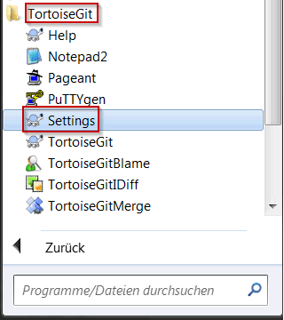

Do 03.05.2018 07:31
Dear colleagues,
an error has happened under point "1. Console":
1. Console:
Open a CMD (Windows) or Terminal (Ubuntu) and use the command: git config --global -l (no panic if the file is not found)
If you see the line core.autocrlf=true everything is ok.
If NOT please use the command:
For Windows: git config --global core.autocrlf true
For Ubuntu: git config --global core.autocrlf input
Please use the right command for your OS.
Dear colleagues,
due to our work in cross-platform development environments (Windows and Ubuntu) there have been issues with line endings.
Windows uses CRLF and Ubuntu uses LF line endings, this little issue will cause the entire file to appear as modified on a commit with the wrong line endings.
In order to prevent this from happening, I would ask you to check the responsible git config and set it if necessary.
In general, if sharing folders on Windows / Linux, please make commits from the same OS from which you did the checkout.
1. Console:
Open a CMD (Windows) or Terminal (Ubuntu) and use the command: git config --global -l (no panic if the file is not found)
If you see the line core.autocrlf=true everything is ok.
If NOT please use the command: git config --global core.autocrlf true
2. TortoiseGIT (Windows ONLY)
Windows Start --> All Programs --> TortoiseGIT --> Settings

On the left side select "GIT", select "Global" and check if the "AutoCrlf" is marked.